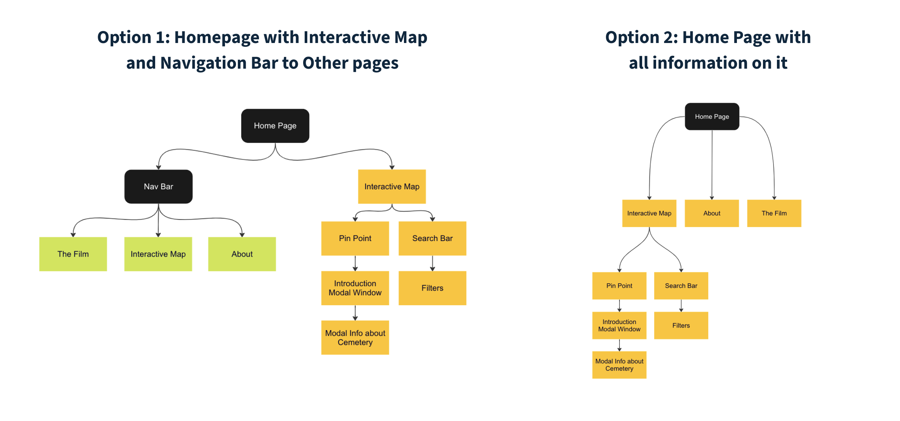
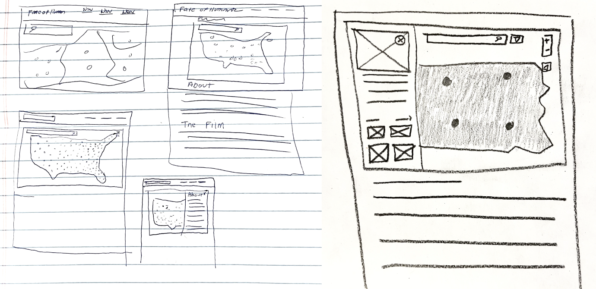
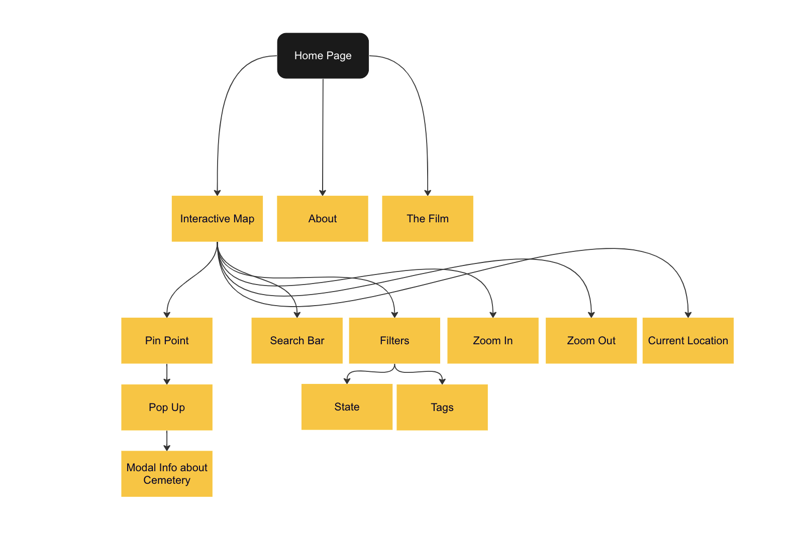
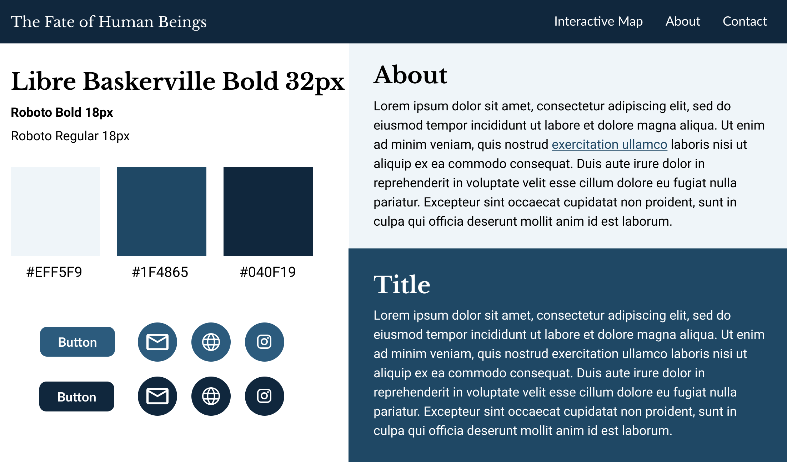
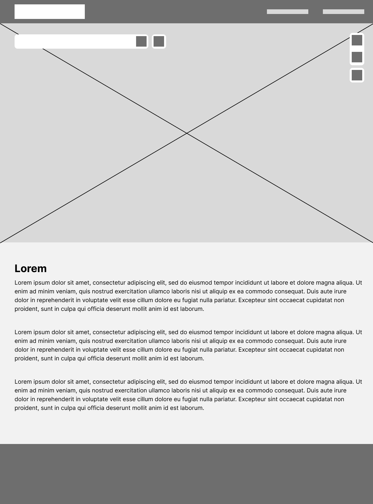
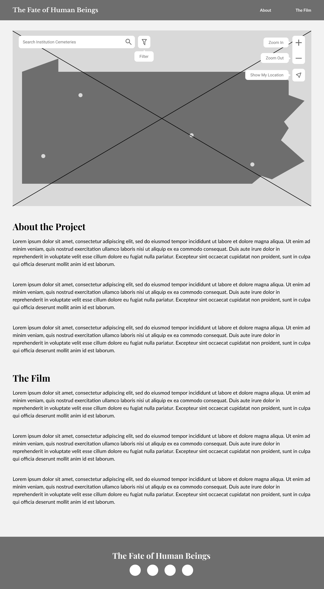

Timeline
October 2022 - Present

October 2022 - Present
UX Researcher and UX Designer
Institution Cemeteries is a companion website to The Fate of Human Beings Movie. The movie details the cemeteries in mental institutions that have unmarked graves in them. This project was given to the DX Group as a part of a grant, and the researchers wanted an accessible web map that plots all the institution cemeteries in Pennsylvania with information about each of the cemeteries as well
How might we visualize unmarked graves in institution cemeteries through a website with an interactive web map in order to inspire cemetery rehab efforts and to memorialize the people forgotten in these graves?
This was my first project with the DX Group, and historically the group receives a lot of web map projects, so I figured I would take a look at some of the websites to get a better understanding of the common UI standards for building web maps.
I wanted to familiarize myself with web standards for creating web maps. This was the first web map that I have ever designed, so I found a couple of online resources that detailed ways to make web maps more accessible. Here is what I found:
Before starting the design process, it is important to understand what the map is trying to convey. Ask yourself these questions: Who is the audience for this map? What tasks should a person be able to do from this map? How can the information on this map be conveyed in a non visual manner? Asking yourself these questions before designing is crucial to ensure your web map is successful because it puts the users needs first. Identifying an audience and a purpose before anything else will inform your designs throughout.
Web maps should not rely solely on color to convey information. Rely on a combination of color, labels, shapes, and icons to portray meaning for each aspect of your map. Additionally, ensure that the text on your maps pass the WCAG’s contrast checker so the text is visible for all users.
Map widget’s need to be designed to be navigable via keyboard. Failure to do so could result in a keyboard trap, meaning a user cannot exit the component by using the keyboard. An accessible web map should be navigable using shift tab and tab commands. Build keyboard shortcuts into your maps so information can be quickly navigated to.
After analyzing the issues with the app, I decided to construct user personas to better understand our target demographic and their pain points. In my user personas, I wanted to represent a diverse set of students, because historically commuter students and older students are overlooked
One major point I gathered from this investigation was that there are 2 avenues to give users supplementary information about the maps, which is either on the map page itself, or in a separate page on the website. Deciding on which of these strategies to employ was very difficult. This was one of the first challenges I encountered in this project, so the best way I figured I’d tackle this is writing down these problems so I had a concrete idea of what I wanted to solve
Next, I wanted to sketch out the different options I had to present all the information on the website. This helped me visualize each of the different options. At this point I was leaning more towards a single page website. I then met with the project manager to ask his input for which design to move forward with.
My project manager suggested moving forward with a single page website with a navigation bar that has links which scroll down to each of the sections on the page. After this meeting I created a revised information architecture that I would reference throughout the project
I created two style tiles to share with my project manager for input. In the first option I opted for Sans Serif fonts which I felt created good contrast between the headers and body text. I also decided on a blue tone which I felt portrayed the mood of the website the best. For my second style tile I shifted to a serif and sans serif font pairing. I also switched up the color scheme to incorporate more purples which I also felt worked well for the context of the website
After showing my style tiles to my project manager for feedback, and we decided to work with the blue color scheme along with the serif and sans serif font pairing as we felt it was more suited for the historical context of the website. I also adjusted some of the colors to ensure that they would pass web accessibility standards.
I first wanted to establish my layout of the buttons on the map before I began implementing the icons and the fonts to style the page.
Finally, I worked on polishing the design and implementing the icons in each of the buttons as well as showing what the hover for the buttons looked like. Implementing hovers was a very important step as they give context to the icons for those not familiar with them and improves user experience.
This project is still a work in progress, and it is continually being iterated. However, from the progress I have already made, I have gained a new appreciation for putting accessibility at the front of any design project. Had I not researched the accessibility standards in web maps, the project would not have been as successful. Personally, my favorite part of the project was reading up on studies done about accessibility in web maps. Overall I am excited to see where this project goes and will continue to update this case study with more progress!